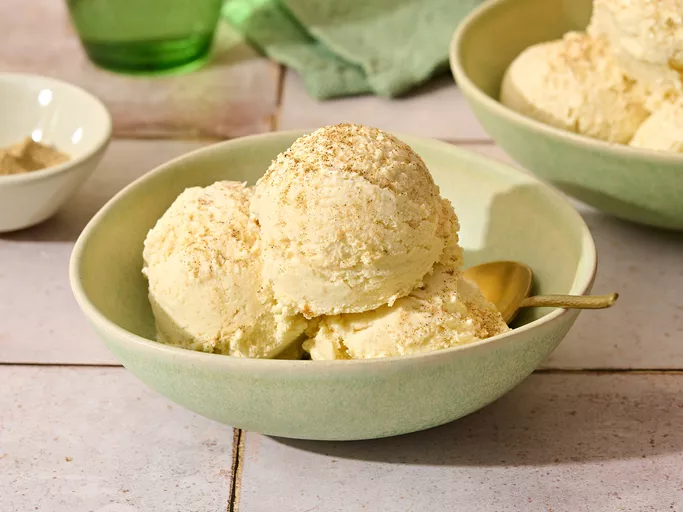

Kulfi

Kulfi is a traditional Indian frozen dessert, often described as a denser, creamier version of ice cream. Originating in the Mughal era, it's made by slowly simmering and reducing milk, then freezing it with flavorings like cardamom, saffron, or pistachios.
Ingredients
- 1 ¼ cups evaporated milk
- 1 ¼ cups sweetened condensed milk
- 1 (16 ounce) container frozen whipped topping, thawed
- 4 slices white bread, torn into pieces
- ½ teaspoon ground cardamom
Steps
- Gather all ingredients.
- Combine evaporated milk, condensed milk, and whipped topping in a blender and blend in pieces of bread until smooth.
- Pour mixture into a 9x13-inch baking dish or two plastic ice cube trays, sprinkle with cardamom.
- Freeze for 8 hours or overnight.
- Enjoy! Your homemade kulfi is ready.
Home